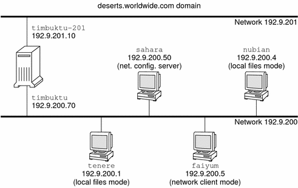

Previous
Previous
Systems That Are Network Clients
Any host that obtains its configuration information from a network configuration server operates in network client mode. Systems that are configured as network clients do not require local copies of the TCP/IP configuration files.
Network client mode simplifies administration of large networks. Network client mode minimizes the number of configuration tasks that you perform on individual hosts. Network client mode assures that all systems on the network adhere to the same configuration standards.
You can configure network client mode on all types of computers. For example, you can configure network client mode on standalone systems.
Mixed Configurations
Configurations are not limited to either an all-local-files mode or an all-network-client mode. Routers and servers should always be configured in local mode. For hosts, you can use any combination of local files and network client mode.
IPv4 Network Topology Scenario
Figure 5-1 shows the hosts of a fictitious network with the network number 192.9.200. The network has one network configuration server, which is called sahara. Hosts tenere and nubian have their own disks and run in local files mode. Host faiyum also has a disk, but this system operates in network client mode.
Finally, the system timbuktu is configured as a router. The system includes two network interfaces. The first interface is named timbuktu. This interface belongs to network 192.9.200. The second interface is named timbuktu-201. This interface belongs to network 192.9.201. Both networks are in the organizational domain deserts.worldwide.com. The domain uses local files as its name service.
Figure 5-1 Hosts in an IPv4 Network Topology Scenario
Adding a Subnet to a Network (Task Map)
If you are changing from a network that does not use a subnet to a network that does use a subnet, perform the tasks in the following task map.
Note - The information in this section applies to IPv4 subnets only. For information on planning IPv6 subnets, refer to Preparing the Network Topology for IPv6 Support and Creating a Numbering Scheme for Subnets.
Task | Description | For Instructions |
|---|---|---|
1. Determine if your network topology requires subnets. | Decide on the new subnet topology, including where to locate routers and hosts on the subnets. | Planning for Routers on Your Network, What Is Subnetting?, and Network Classes |
2. Assign the IP addresses with the new subnet number to the systems to become members of the subnet. | Configure IP addresses that use the new subnet number, either during Solaris OS installation or later, in the /etc/hostname.interface file. | |
3. Configure the network mask of the subnet on all prospective systems in the subnet. | Modify the /etc/inet/netmasks file, if you are manually configuring network clients. Or, supply the netmask to the Solaris installation program. | netmasks Database and Creating the Network Mask for IPv4 Addresses |
4. Edit the network databases with the new IP addresses of all systems in the subnet. | Modify /etc/inet/hosts on all hosts to reflect the new host addresses. | |
5. Reboot all systems. |
Network Configuration Task Map
Task | Description | For Instructions |
|---|---|---|
Configure a host for local files mode | Involves editing the nodename, hostname, hosts, defaultdomain, defaultrouter, and netmasks files | |
Set up a network configuration server | Involves turning on the in.tftp daemon, and editing the hosts, ethers, and bootparams files | |
Configure a host for network client mode | Involves creating the hostname file, editing the hosts file, and deleting the nodename and defaultdomain files, if they exist | |
Specify a routing strategy for the network client | Involves determining whether to use static routing or dynamic routing on the host. | How to Enable Static Routing on a Single-Interface Host and How to Enable Dynamic Routing on a Single-Interface Host. |
Modify the existing network configuration | Involves changing the host name, IP address, and other parameters that were set at installation or configured at a later time. | How to Change the IPv4 Address and Other Network Configuration Parameters |
Configuring Systems on the Local Network
Network software installation occurs along with the installation of the operating system software. At that time, certain IP configuration parameters must be stored in appropriate files so that they can be read at boot time.
The network configuration process involves creating or editing the network configuration files. How configuration information is made available to a system's kernel is conditional. The availability depends on whether these files are stored locally (local files mode) or acquired from the network configuration server (network client mode).
The parameters that are supplied during network configuration follow:
The IP address of each network interface on every system.
The host names of each system on the network. You can type the host name in a local file or a name service database.
The NIS, LDAP, or DNS domain name in which the system resides, if applicable.
The default router addresses. You supply this information if you have a simple network topology with only one router attached to each network. You also supply this information if your routers do not run routing protocols such as the Router Discovery Server Protocol (RDISC) or the Router Information Protocol (RIP). For more information on default routers, refer to Packet Forwarding and Routing on IPv4 Networks See Table 5-1 for a list of routing protocols supported in the Solaris OS.
Subnet mask (required only for networks with subnets).
If the Solaris installation program detects more one interface on the system, you can optionally configure the additional interfaces during installation. For complete instructions, see Solaris Express Installation Guide: Basic Installations.
This chapter contains information on creating and editing local configuration files. See System Administration Guide: Naming and Directory Services (DNS, NIS, and LDAP) for information on working with name service databases.
 How to Configure a Host for Local Files Mode
How to Configure a Host for Local Files Mode
Use this procedure for configuring TCP/IP on a host that runs in local files mode.
Assume the Primary Administrator role, or become superuser
The Primary Administrator role includes the Primary Administrator profile. To create the role and assign the role to a user, see Chapter 2, "Working With the Solaris Management Console (Tasks)," in System Administration Guide: Basic Administration.
Change to the /etc directory.
Verify that the correct host name is set in the /etc/nodename file.
When you specify the host name of a system during Solaris installation, that host name is entered into the /etc/nodename file. Make sure that the node name entry is the correct host name for the system.
Verify that an /etc/hostname.interface file exists for each network interface on the system.
For file syntax and basic information about the /etc/hostname.interface file, refer to Basics for Administering Physical Interfaces.
The Solaris installation program requires you to configure at least one interface during installation. The first interface that you configure automatically becomes the primary network interface. The installation program creates an /etc/hostname.interface file for the primary network interface and any other interfaces that you optionally configure at installation time.
If you configured additional interfaces during installation, verify that each interface has a corresponding /etc/hostname.interface file. You do not need to configure more than one interface during Solaris installation. However, if you later want to add more interfaces to the system, you must manually configure them.
For steps for manually configuring interfaces, refer to How to Configure a Physical Interface After System Installation, for releases starting with Solaris 10 1/06.
Verify that the entries in the /etc/inet/hosts file are current.
The Solaris installation program creates entries for the primary network interface, loopback address, and, if applicable, any additional interfaces that were configured during installation.
Make sure that the existing entries in /etc/inet/hosts are current.
(Optional) Add the IP addresses and corresponding names for any network interfaces that were added to the local host after installation.
(Optional) Add the IP address or addresses of the file server, if the /usr file system is NFS mounted.
Type the host's fully qualified domain name in the /etc/defaultdomain file.
For example, suppose host tenere was part of the domain deserts.worldwide.com. Therefore, you would type deserts.worldwide.com in /etc/defaultdomain. See /etc/defaultdomain File for more information.
Type the router's name in the /etc/defaultrouter file.
See /etc/defaultrouter File for information about this file.
Type the name of the default router and its IP addresses in the /etc/inet/hosts file.
Additional routing options are available, as discussed in How to Configure Hosts for Network Client Mode. You can apply these options to a local files mode configuration.
Add the network mask for your network, if applicable:
If the host gets its IP address from a DHCP server, you do not have to specify the network mask.
If you have set up a NIS server on the same network as this client, you can add netmask information into the appropriate database on the server.
For all other conditions, do the following:
Type the network number and the netmask in the /etc/inet/netmasks file.
Use the following format:
network-number netmask
For example, for the Class C network number 192.168.83, you would type:
192.168.83.0 255.255.255.0
For CIDR addresses, convert the network prefix into the equivalent dotted decimal representation. Network prefixes and their dotted decimal equivalents can be found in Table 2-3. For example, use the following to express the CIDR network prefix 192.168.3.0/22.
192.168.3.0 255.255.252.0
Change the lookup order for netmasks in /etc/nsswitch.conf, so that local files are searched first:
netmasks: files nis